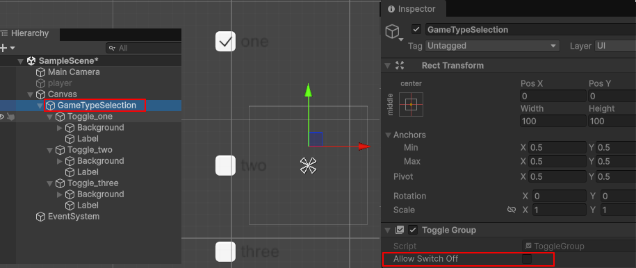
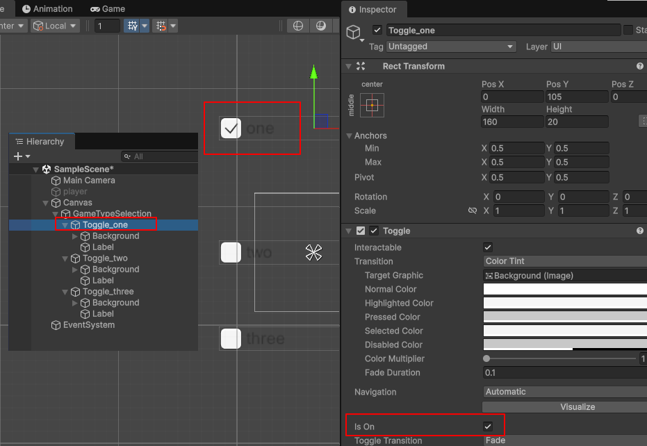
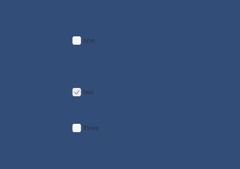
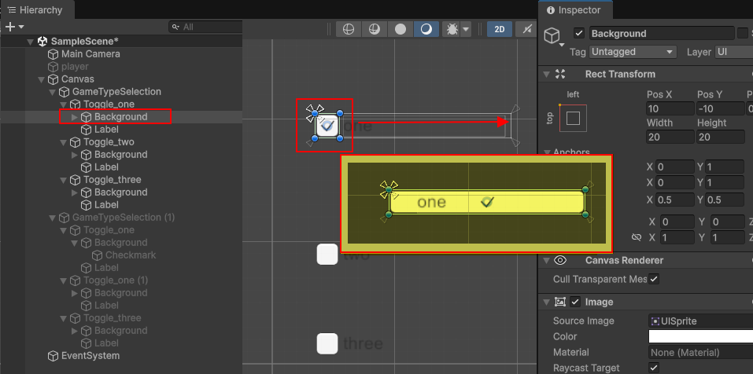
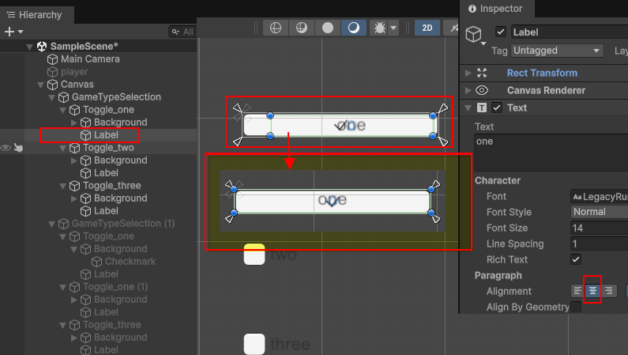
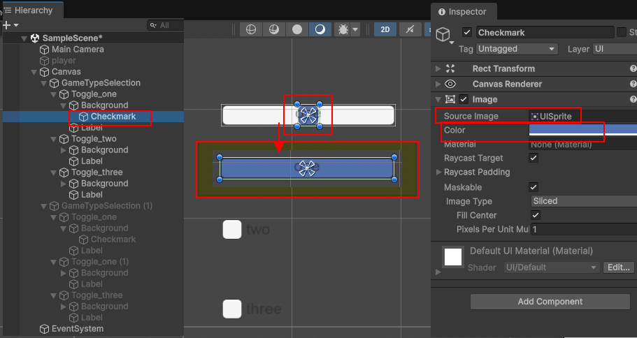
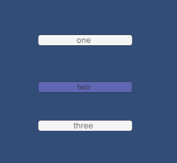

Toggle 버튼을 이용해서 라디오 버튼을 만들어 보겠습니다.Toggle을 별도의 수정없이 체크 박스 형태의 라디오 버튼을 만들어 보겠습니다.1. 계층뷰에서 "Create Empty"으로 빈 오브젝트를 생성합니다.2. 생성한 빈 오브젝트에 "Toggle Group" 컴포넌트를 추가 합니다. 3. "Allow Switch Off" 항목을 체크 해제 합니다. Allow Switch Off = true 이면 ---> 켜진 Toggle을 다시 클릭하면 OFF 가능  4. 마우스 오른쪽 버튼을 UI > Toggle 추가합니다. 위 그림에서는 추가한 세개의 Toggle을 각각 Toggle_one, Toggle_Two, Toggle_three로 이름을 변경 합니다. 5. 세개의 Toggle중에 하나만 "Is On"에 체크 합니다. 나머지 두개의 Toggle에 있는 "Is On"은 체크 해제 합니다.  실행 화면은 다음과 같습니다.  Toggle을 수정하여 버튼 형태의 라디오 버튼을 만들어 보겠습니다.1. 체크 박스형의 라디오 버튼을 단계를 따라 만들기 2. Background를 선택하고 Toggle_one의 크기까지 늘려 조정 합니다.  3. Label을 선택하고 Paragraph를 중간으로 지정후에 Rect Tool로 Toggle_one의 크기까지 늘려 조정 합니다.  4. Checkmark를 선택하고 Source Image, Color를 수정하고, Checkmark의 크기를 Toggle_one의 크기까지 늘려 조정 합니다. Source Image는 Checkmark에서 UISpite(다른것도 가능)로 지정 체크시 Color를 원하는 칼라로 지정  실행 화면입니다.  |